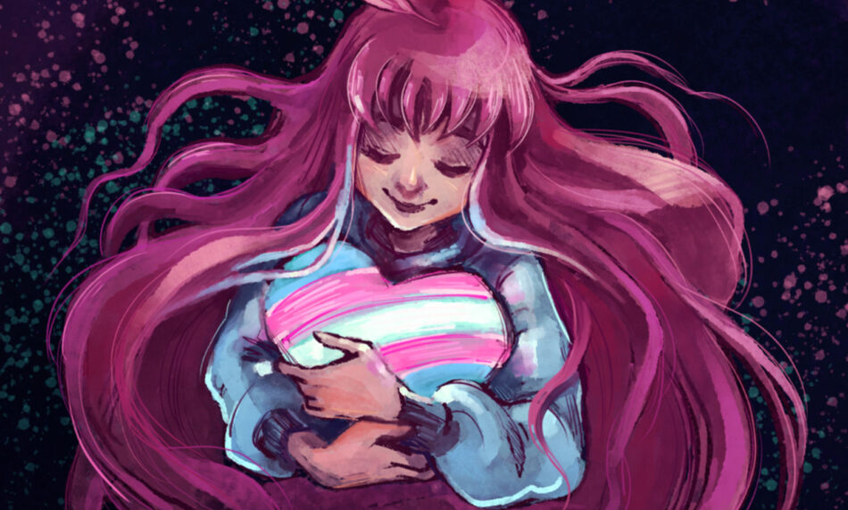

Sou uma pessoa bem dedicada que gosta de se desafiar e sair da zona de conforto, adoro trabalhar em equipe e colaborar com o time para que se construa uma relação agradável e saudável no time ajudando a todos em tudo que me é possível e no que for "impossível" dar um jeito.
Meu objetivo profissional atualmente é afiar os meus conhecimentos nas linguagens em que eu já conheço e aprender mais conforme a necessidade do projeto, desejo me desenvolver mais como pessoa também dentro de cada equipe na qual eu fizer parte sempre ouvindo o próximo tanto no lado profissional quanto no pessoal criando uma boa relação entre a equipe e melhorando o trabalho de todos uns com os outros.